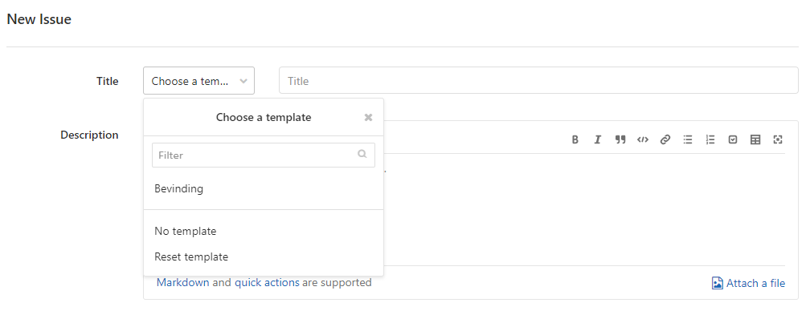

Ondersteuning
Helpdesk
KOOP beantwoordt vragen over STOP via stopstandaard@koop.overheid.nl.
Bevindingen
Vermeende fouten in de technische hulpmiddelen of documentatie en bevindingen over toepassing van de standaard waarvoor een wijziging in de standaard nodig is, kunnen gemeld worden via de Gitlab issue tracker. Hier wordt ook de status van de bevindingen bijgehouden, en zijn eerder gemelde bevindingen in te zien.
Melden van een bevinding
Ga naar de Gitlab issue tracker
Zoek eerst of er al een bevinding is gerapporteerd over het hetzelfde onderwerp.
Zo niet, maak een nieuwe bevinding aan. Daarvoor is alleen een gitlab account nodig.
Kies voor het beschrijven van de bevinding een van de beschikbare templates. 
In behandeling nemen van een bevinding
Zodra een bevinding wordt ontvangen, start een procedure om de bevinding te beoordelen. Dit proces is te volgen via de blauwe labels die aan de bevinding worden toegevoegd, en is te volgen via het bord Acceptatie:
KOOP markeert de bevinding als Te onderzoeken
KOOP kan contact opnemen als er vragen zijn over de inhoud van de bevinding.
Als onderdeel van het onderzoek doet KOOP een voorstel voor het oppakken van de bevinding. De gele labels (schema, documentatie, voorbeelden) geven aan welke onderdelen van de standaard vooral geraakt worden. Tevens wordt via de groene labels (correctie, uitbreiding) aangegeven wat het effect van de voorgestelde oplossing op de standaard is.
Na afronding van het onderzoek krijgt de bevinding het label Te bespreken. Het bespreken gebeurt in een DSO afstemmingsoverleg. Daar wordt besloten of een bevinding opgepakt gaat worden (Geaccepteerd) of niet (Niet geaccepteerd). In het laatste geval zal de reden aangegeven worden bij de bevinding.
Plannen van het oplossen van een bevinding
Als een bevinding Geaccepteerd is wordt het verwerken van de oplossing in de standaard gepland. Dat is te volgen op het bord Planning, waarbij een milestone aan de bevinding gekoppeld wordt:
Eerstvolgende versie: het streven is om de oplossing van de bevinding in de eerstvolgende versie van de standaard mee te nemen.
Eerstvolgende of latere versie: het streven is om de oplossing van de bevinding zo snel mogelijk in een oplevering van de standaard mee te nemen. Dat is bij voorkeur de eerstvolgende oplevering, maar het kan ook een van de volgende opleveringen zijn.
Toekomstige versie: het is nog niet bekend in welke oplevering de oplossing van de bevinding meegenomenn wordt.
Opgeloste bevindingen
Als een bevinding opgelost is, wordt de milestone gezet op de versie van de standaard waarvan de oplossing onderdeel uitmaakt. Via het overzicht van milestones is per versie van de standaard na te gaan welke bevindingen zijn opgelost. De bevinding krijgt als label Gerealiseerd en wordt gesloten.
Als bij het oplossen van de bevinding blijkt dat de oplossing alsnog niet nodig of wenselijk is, krijgt de bevinding als label Niet opgepakt en wordt gesloten. De reden voor het niet oplossen van de bevinding wordt bij de bevinding vermeld.